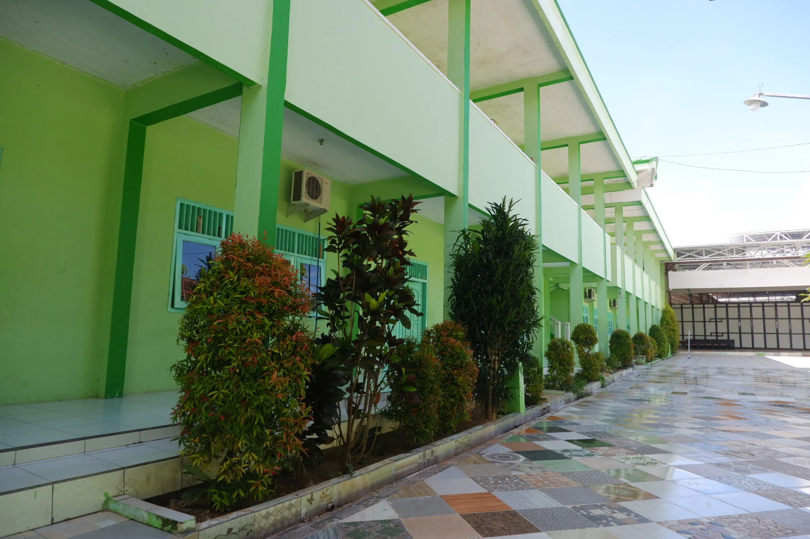

Berita Terbaru
Memuat berita...
Mewujudkan generasi berilmu, berakhlak mulia, berjiwa pesantren, serta siap menghadapi masa depan melalui pendidikan, sains, riset, dan prestasi.

“Ilmu, Akhlak, Prestasi untuk Umat dan Bangsa.”
MA Nurul Islam KarangcempakaPrestasi riset dan inovasi santri MA Nurul Islam pada Olimpiade Penelitian Indonesia 2026.
Lima santri diterima melalui SNBP dan sebelas santri melalui SPAN-PTKIN tahun 2026.
Dua santri meraih juara pada Kompetisi Patriot Muda tingkat SMA/sederajat se-Kabupaten Sumenep.